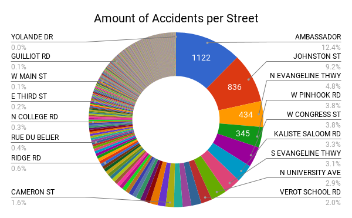
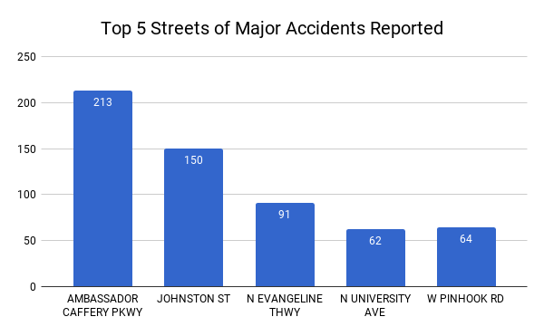
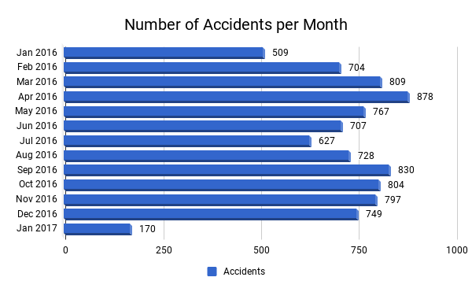
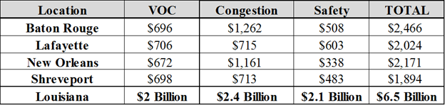

Lafayette Smart City
"In 2016, there was 15,757 reported crime incidents in Lafayette parish. 57.62% of the reported incidents are car accidents. Below is a pie chart of all reported accidents in Lafayette."




"Louisiana has the seventh highest rate of fatal traffic crashes in the nation. *
In 2016, there were 15,757 reported crime incidents in Lafayette parish. Of those crimes, 57.62% of the reported incidents are car accidents. Below are data visualizations of this open data.
To the right you can see the top nine most dangerous roads and how much accidents on that road contributed to the total 9,079.
These streets are the ones with the most major accidents reported.
An average of 25 accidents per day.
A breakdown of costs per motorist spends per year is shown above.
Vehicle Operating Costs (VOC) - a result of driving on roads in need of repair
Congestion - lost time and fuel due to congestion-related delays
Safety - costs of traffic crashes in which roadway features likely were a contributing factor
*